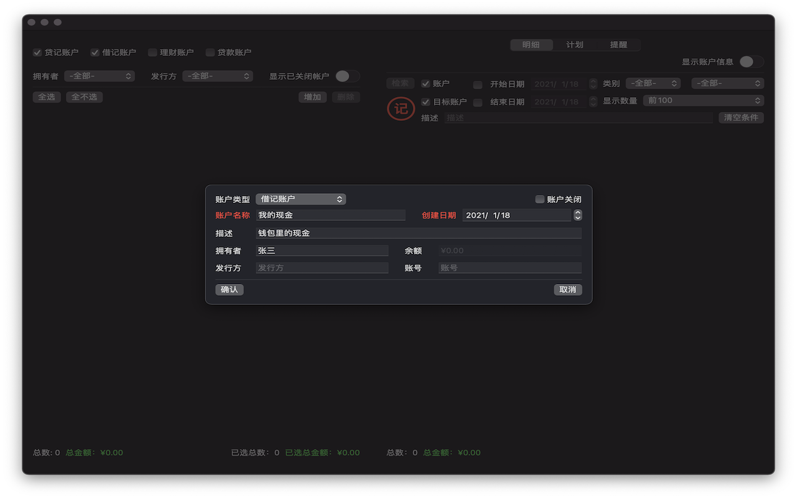
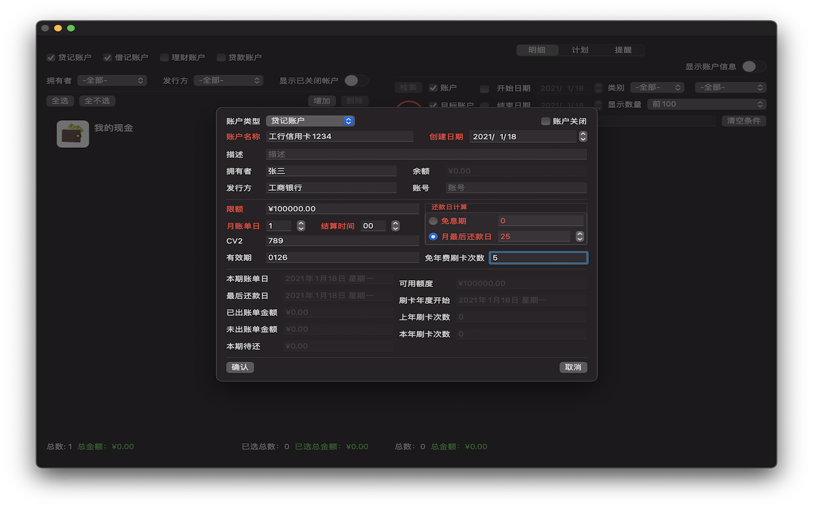
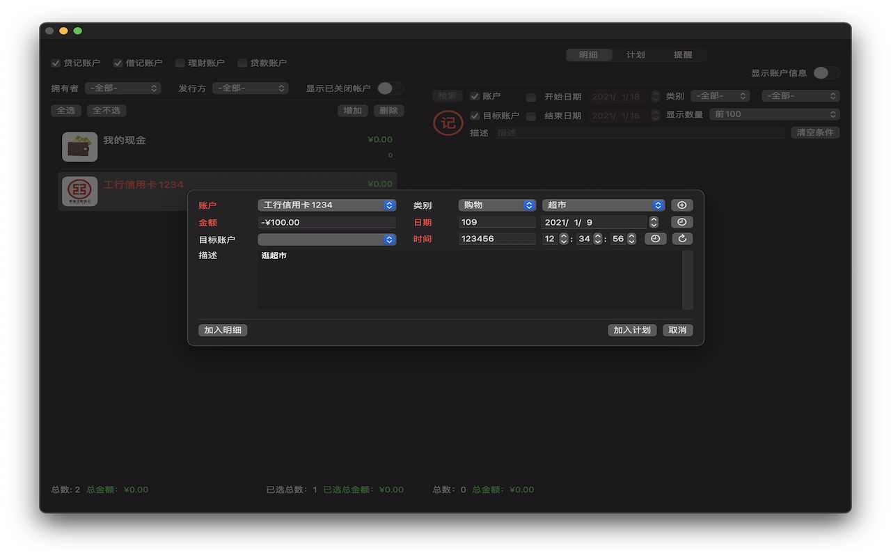
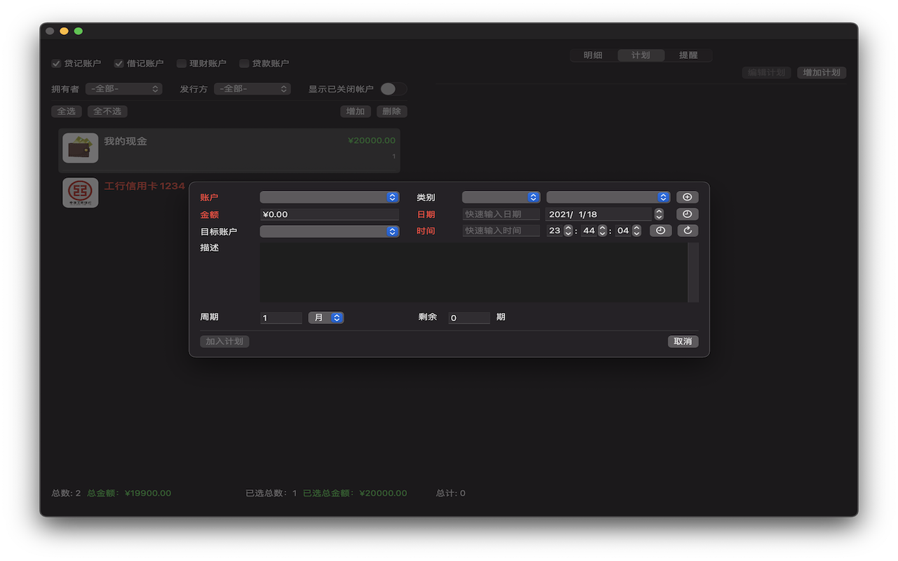
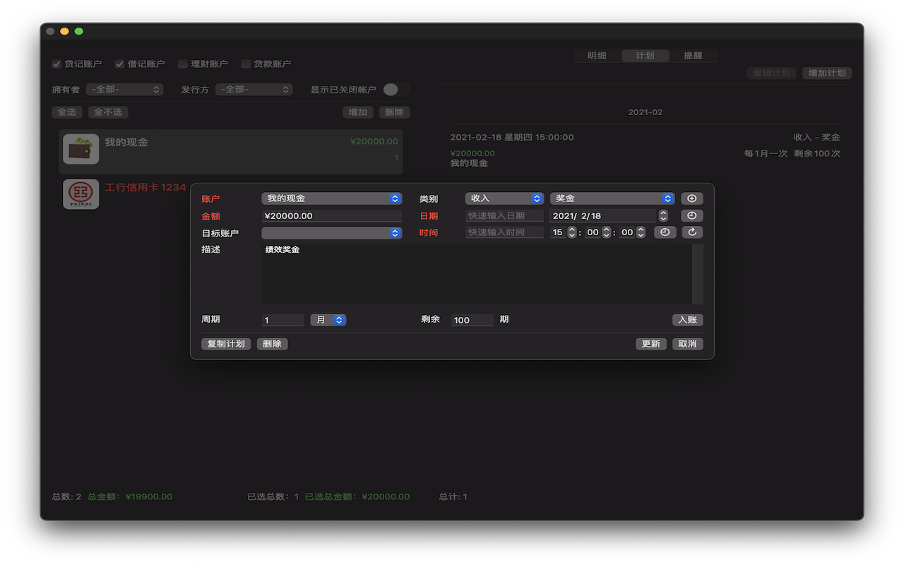
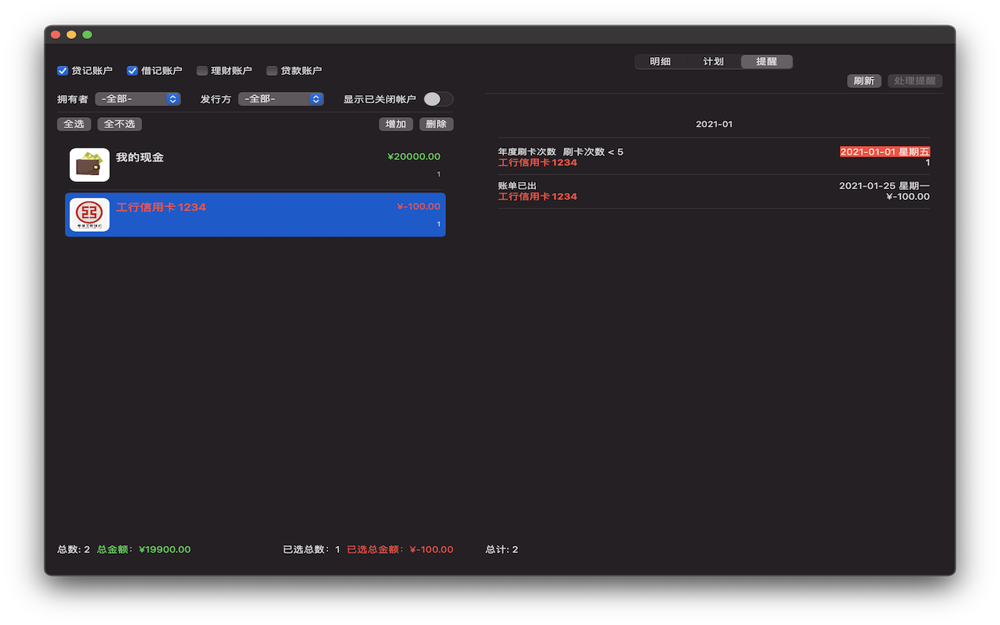
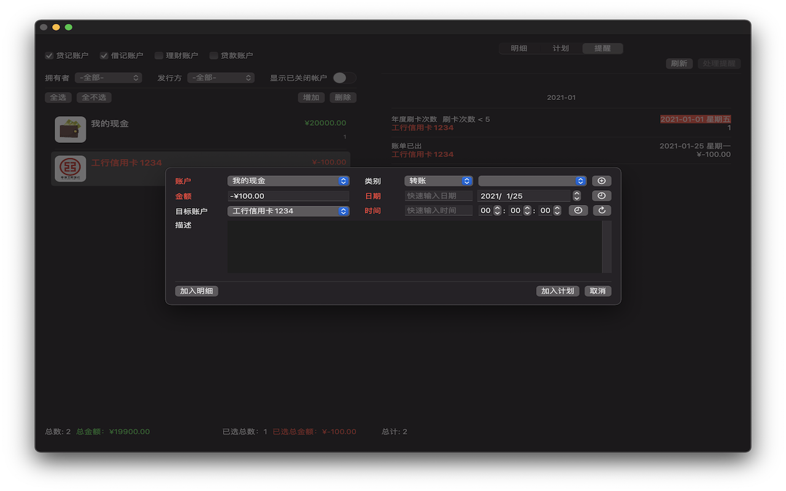

增加借记账户

增加贷记账户
选择不同的“账户类型“，增加账户窗口会显示不同的输入项。红色字段为必填项，否则”确认“按钮会保持无效状态。“确认”按钮增加一条新账户，”取消“按钮关闭窗口，返回主界面。

更新账户
勾选主界面右侧明细页面的“显示账户信息”选项，可以显示当前选中账户的详细信息。
这里可以修改账户内容，并用“更新”按钮确认修改。注意，红色字段为必填字段，不能空，如果是数字，不能为0，否则“更新”按钮无效。

添加明细（记账）
记账有两种方法，可以点击“记账”按钮添加一条新交易记录，也可以从已有记录复制修改。
每条交易记录的账户、交易金额和时间字段是必填字段。
类别支持两级分类，可以自定义新类别，也可以不填，保持为空。
目标账户针对转账类交易，当金额在两个账户之间发生转移时，需要用到目标账户，以保持总金额平衡。交易金额小于0，表示钱从账户转移到目标账户，账户余额减少，目标账户余额增加；反之如果交易金额大于0，表示钱从目标账户转移到账户，账户余额增加，目标账户余额减少。
- 新添加一条明细
- 从已有明细复制一条明细
主界面右侧选择明细页面，在过滤面板点击“记账”按钮。
如果账户列表里有选中的账户，明细信息窗口的“账户”栏自动填写改账户（如果多选，此处为第一个选择的账户）的名称。选择交易类别，如果需要可以点击类别右侧按钮新增类别。

添加类别
新添加类别自动填入选项，注意，列表内的选项根据交易数目按降序排列，也就是说，交易数越多的类别，显示在列表中的位置越靠前。
交易金额不能为0。交易日期可以直接编辑，也可以点击右侧的按钮激活图形日历，或者快速选择当前日期。交易时间右侧按钮可以快速选择当前时间，或者清零。
"加入明细"按钮以窗口内容生成一条交易记录，并关闭窗口。
“加入计划“按钮转添加计划明细信息窗口，可以以当前交易记录为模版，新建一个计划。
“取消”按钮放弃修改，并关闭窗口。
双击一条明细条目，打开交易明细信息窗口。

更新明细
此时的交易明细窗口下方的按钮会有少许变化。
"复制明细"按钮以当前窗口内容生成一条新的交易记录，并关闭窗口。
“删除”按钮删除当前交易记录，忽略窗口内容的任何修改，并关闭窗口。
“加入计划”按钮以当前交易记录为模版，生成一条计划，详见下文。
“更新”按钮将窗口内所做的修改同步到对应的交易记录，原有记录被更新，不会增加新的交易记录，并关闭窗口。
“取消”按钮放弃修改，并关闭窗口。
添加计划有两种方法，可以点击”计划“页面下方的“增加计划”按钮，也可以以交易记录为模版增加计划。
计划的信息窗口和交易记录的类似，只是多了关于周期的字段，计划可以选择以日、月、年为周期单位，每期长度，以及剩余周期数。
计划入账后会自动延到下一期。如果全部计划都已完成，即剩余周期数为零，会提示是否删除。
- 新增计划
- 以交易记录为模版生成计划

新增计划
从账户列表里选择账户，金额不能为0，否则“加入计划”按钮不可用。
如果计划有周期性，可以填写周期长度，周期单位，以及剩余周期数。
对于单次计划，剩余周期数为0即可，周期和单位无意义。
“加入计划”按钮以窗口内容生成一个计划，并关闭窗口。
“取消”按钮放弃修改，并关闭窗口。
交易记录生成计划
从交易明细信息窗口点击“加入计划”按钮，打开计划明细信息窗口。
“加入计划”按钮以窗口内容生成一个计划，并返回交易明细信息窗口。
“取消”按钮放弃计划，返回交易明细信息窗口。

计划页面
双击计划条目，或者在列表中选择计划条目，点击列表下方“编辑计划”按钮，打开计划明细信息窗口。
>

编辑计划
"入账"按钮打开交易明细信息窗口，修改后“加入明细“完成入账，或”取消“放弃入账。
“复制计划”按钮以当前窗口内容新增一条新的计划，并关闭窗口。
“删除”按钮删除当前计划，忽略窗口内容的任何修改，并关闭窗口。
“更新”按钮将窗口内所做的修改同步到对应的计划，原有计划内容被更新，不会增加新的计划，并关闭窗口。
“取消”按钮放弃修改，并关闭窗口。
提醒的内容由应用自动生成。

提醒页面
双击提醒条目，或者在列表中选择提醒条目，点击下方“处理提醒”按钮，打开提醒明细信息窗口。

处理提醒
注意，部分类型的提醒无法产生交易，因此也没有后续的处理，例如卡片到期提醒、年度刷卡次数不足提醒等，此类提醒无法打开明细信息窗口。
“加入明细”按钮以窗口内容生成一条交易记录，关闭窗口，并删除提醒条目。如果新增交易记录的交易金额等要素符合提醒内容的要求，此条提醒处理完成，不会再出现。
“加入计划”按钮转入计划明细信息窗口，以当前提醒内容为模版，生成一条计划。
“取消”按钮放弃修改，并关闭窗口。
菜单“数据”-“保存”人工出发数据写入。
菜单“数据”-“恢复”将备份数据恢复到当前，当前数据永久丢失。
菜单”数据“-”导出“将数据导出到指定位置。
菜单“数据”-“导入”用指定数据作为应用数据，当前数据自动保存，可以通过菜单“数据”-“恢复”恢复导入前的数据。